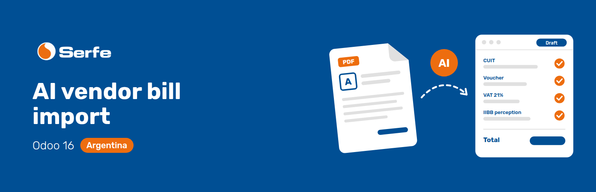

Read supplier invoices from a PDF or image with AI and get a draft vendor bill ready for review in Odoo.
The problem
Loading vendor bills by hand is repetitive: copying the vendor, CUIT, voucher type, point of sale and number, dates, VAT and perceptions, line by line. It takes operating time and invites typing mistakes.
What it does
- •Reads the invoice from a PDF or an image and creates a draft vendor bill. It never posts it.
- •Understands Argentine invoices: the vendor's CUIT, the voucher letter (A, B or C) and the matching LATAM document type, point of sale and number as printed, day-first dates, the printed VAT rate, and IIBB and VAT perceptions applied as the matching AFIP tax.
- •Keeps unusual VAT rates, such as 27% on telecom, gas or electricity, because your company's purchase VAT rates are part of what the model is given.
- •Is built to be reviewed: a step that cannot be resolved leaves the draft as extracted instead of blocking the import.
How it works
Uploading a PDF or an image
- 1On a vendor bill or refund list, press Upload and choose the PDF, PNG or JPEG (up to 20 MiB).
- 2The document is read and the data is extracted with the model you configured.
- 3A review wizard opens with the result. Check totals, taxes and the vendor, fix what is needed and post.
On an existing bill
- 1Open the draft vendor bill that already has the PDF or image attached.
- 2Press Process with AI.
- 3The extracted data fills in the draft. Review it and post.
Limitations
- •Argentina only. The extraction is tuned for AFIP invoices. Other countries are not covered.
- •Odoo 16 Community only. This Python addon is not supported on Odoo Online.
- •The model can be wrong. The result is a suggestion: check the vendor, numbering, dates, taxes and totals before posting. The app does not verify bills with AFIP.
Costs and data
External processing is off by default. Only after an administrator opts in for the company, Odoo sends the full invoice, its transcription, the extraction prompts, and the company name, CUIT, currency and purchase VAT rates to the endpoint you configure. That endpoint may forward data to other providers. Review their privacy, retention and pricing terms.
- •No license fee. This app is free and open source.
- •Your costs: the usage of your AI provider. Serfe does not provide the AI service.
- •Your API key: stored in the provider record and readable only by LLM Managers.
Requirements
- •Odoo 16 Community with the Argentine localization (
l10n_ar) and the OCA invoice import dependencies. - •An OpenAI-compatible endpoint with
/models, document input via streaming /responses, and /chat/completions. Not every provider or model supports both document input and chat.
Configuration
- 1In LLM → Configuration → Providers, open the provider, fill in the API Base and API Key of your AI provider, and press Fetch Models. See your provider's documentation to get the API URL and key.
- 2Assign a model to the Invoice Extraction assistant (LLM → Configuration → Assistants).
- 3As an administrator, open the company's Invoice AI tab and enable Allow external AI invoice processing.
Turn off the company option to stop future AI invoice requests, or archive Invoice Extraction to turn it off for every company. Upload then returns to Odoo's standard decoders.
Support
Serfe maintains this app. For help with the setup, another country or your own voucher formats, write to info@serfe.com.
Built on Apexive's LLM modules and OCA Invoice Import.